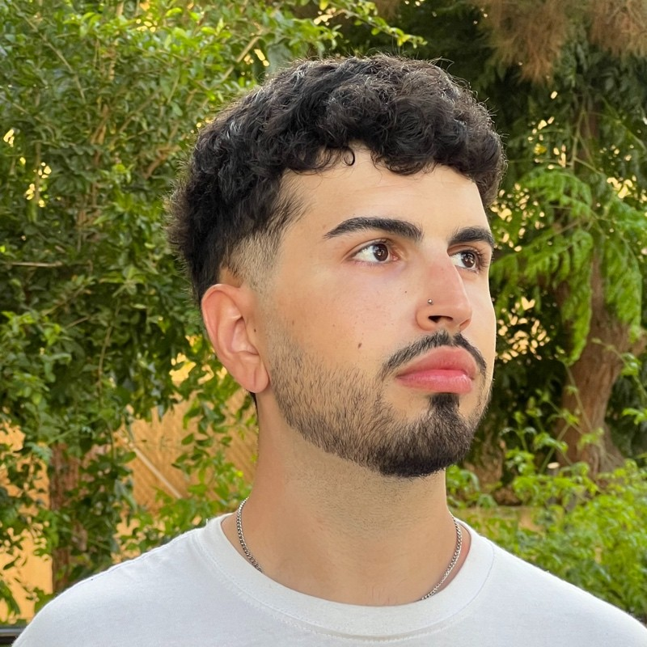

I work between what people need and what is possible to build.
Trabajo entre lo que la gente necesita y lo que es posible construir.
I came to design through photography, where I realised that what I enjoyed most was editing and spending hours on every detail. I learned to code so I could bring that sensibility into technology, and that mix of visual eye and technical understanding is still how I work today.
Llegué al diseño desde la fotografía, donde descubrí que lo que más disfrutaba era editar y pasar horas con cada detalle. Aprendí a programar para llevar esa sensibilidad a la tecnología, y esa mezcla de ojo visual y entendimiento técnico sigue siendo mi forma de trabajar.
At Anexia I co-created, with another designer, a multi-brand design system for three very different products that share the same essence. It is already the foundation of two of them, used every day by designers and developers, and the public website is moving onto it. I also designed the logos of two of those products. I also take an active part in product decisions. Before that, at Nurun, I built the design systems for Moeve and the pixel-perfect iconography for Iberdrola's new visual identity, and on a public health project at Fujitsu.
En Anexia he creado, junto a otra diseñadora, un design system multimarca para tres productos muy distintos que comparten una misma esencia. Ya es la base de dos de ellos, lo usan cada día diseñadores y desarrolladores, y la web pública se está migrando a él. También diseñé los logos de dos de esos productos. Además, participo de forma activa en las decisiones de producto. Antes, en Nurun, creé los design systems de Moeve y la iconografía pixel-perfect de Iberdrola para su nueva identidad visual, y en un proyecto de salud pública en Fujitsu.
I'm systematic, I like bringing order to complicated things, and I enjoy understanding everyone involved, from users to developers. UI, research and design systems are what I enjoy most. I'm drawn to functional design, where nothing is there just for the sake of it.
Soy sistemático, me gusta ordenar lo complicado y entender a todas las partes, de los usuarios a los desarrolladores. Lo que más disfruto es la UI, la investigación y los design systems. Me atrae el diseño funcional, donde nada está por estar.
ExperienceExperiencia2019 — NowHoy
- Product Designer · Anexia Sep 2025 — NowHoy Co-created multi-brand design system (3 brands, ~100 components): the base of two products, migration under way on the third. Logos for two products. End-to-end design of an internal SaaS tool and N0–N2 process mapping. Design system multimarca co-creado (3 marcas, ~100 componentes): base de dos productos y en migración en el tercero. Logos de dos productos. Diseño integral de una herramienta SaaS interna y mapeo de procesos N0–N2.
- UX/UI Designer · Nurun Nov 2024 — Jun 2025 Two design systems for Moeve (web modules and newsletters). Pixel-perfect iconography and infographics for Iberdrola's new visual identity. Projects for ESERP, Ilunion and Mondelez with LaLiga. Dos design systems para Moeve (módulos web y newsletters). Iconografía pixel-perfect e infografías para la nueva identidad visual de Iberdrola. Proyectos para ESERP, Ilunion y Mondelez con LaLiga.
- UX/UI Designer · Fujitsu May 2023 — May 2024 Led UX/UI on major projects, including a government health initiative. Usability testing and close work with front-end teams. Responsable de UX/UI en proyectos grandes, entre ellos una iniciativa de salud pública. Tests de usabilidad y trabajo estrecho con front-end.
- Front-end Developer · Kerox Nov 2022 — May 2023 Designed and built interfaces for a health product, from Figma prototype to Angular. Diseño y desarrollo de interfaces para un producto de salud, del prototipo en Figma a Angular.
- UX/UI Designer Intern · Athagon Jun 2022 — Nov 2022 Designed and built the company's main website. Diseño y desarrollo de la web principal de la empresa.
- Graphic DesignerDiseñador gráfico · Freelance 2019 — 2022 Visual identities for musical artists. Identidades visuales para artistas musicales.
EducationFormación2020 — 2025
- Bootcamp in Product Design · Neoland2024
- HND in Computing · Pearson College2020 — 22
- Higher Vocational Training in App DevelopmentCFGS en Desarrollo de Aplicaciones · CEV Madrid2020 — 22
- Introduction to Web Accessibility · edX2025
- Advanced UI Design · LinkedIn Learning2024